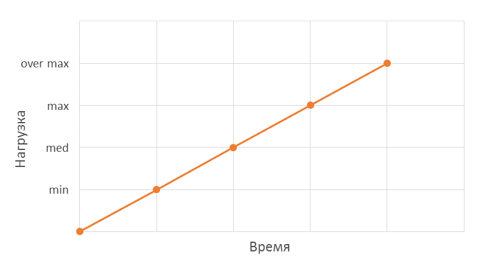

Существует множество видов тестирования производительности. Классификация видов тестирования производительности строится на основе того, какие цели превледует определенный вид тестирования.
Начать новое тестирование
Нагрузочное тестирование (load testing) - данный тип тестирования позволяет оценить поведение системы при возрастающей нагрузке, целью нагрузочного тестирования является также определение максимальной нагрузки, которую может выдержать система. Производительность при этом определяется следующими факторами:

Тестирование стабильности (stability testing) - позволяет проверить работоспособность системы на длительном интервале времени. В ходе тестирования основной акцент делается на измерение:
| Запрос | Кол-во запросов | Среднее время отклика(в мс) | Процент ошибок |
|---|---|---|---|
| GetStatus/document | 12452 | 1041 | 0 |
| Send/document | 7466 | 4012 | 3.4 |
Тестирование отказоустойчивоски (failover testing) - данный вид тестирования производительностипозволяет проверить поведение системы в случае сбоя серверов или при других неблагоприятных факторах. Во время тестированияпроверяются следующие операции: